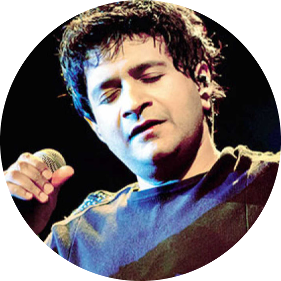

|  |
Krishnakumar KunnathIndian playback singer (23 August 1968 – 31 May 2022) |
Krishnakumar Kunnath (23 August 1968 – 31 May 2022), popularly known as KK, was an Indian playback singer. Regarded as one of the best and most versatile singers in the Indian music industry,[2][3][4] he recorded songs in several languages, including Hindi, Tamil, Telugu, Kannada, Malayalam, Marathi, Odia, Bengali, Assamese and Gujarati .[5]
KK began his career by singing for advertisement jingles, and made his film debut with an A.R. Rahman soundtrack. In 1999, he launched his debut album titled Pal. The songs "Pal" and "Yaaron" from the album Pal became very popular and are commonly used in school farewells. His popular songs included "Tadap Tadap" from Hum Dil De Chuke Sanam (1999), the Tamil song "Apadi Podu", "Dola Re Dola" from Devdas (2002), "Kya Mujhe Pyaar Hai" from Woh Lamhe... (2006), "Aankhon Mein Teri" from Om Shanti Om (2007), "Khuda Jane" from Bachna Ae Haseeno (2008),"Piya Aaye Na" from Aashiqui 2 (2013), "Mat Aazma Re" from Murder 3 (2013), "India Wale" from Happy New Year (2014) and "Tu Jo Mila" from Bajrangi Bhaijaan (2015), among others.[6] He has received six Filmfare Awards nominations, and a Filmfare Awards South.
After graduating from Kirori Mal College, Delhi University in commerce, KK had a brief stint of six months as a marketing executive. After few years, in 1994, he moved to Mumbai.[12]
In 1994, he gave his demo tape to Louis Banks, Ranjit Barot and Lesle Lewis to get a break in the music arena. He was called by UTV and he sang a jingle for Santogen Suiting ad.[13] In a span of four years, he sang more than 3,500 jingles across 11 languages. He got his first break in Mumbai with UTV to sing jingles. He considers Lesle Lewis as his mentor for giving him his first jingle to sing in Mumbai.[12] KK was introduced as a playback singer with A. R. Rahman's hit song "Kalluri Saaley" and "Hello Dr." from Kadir's Kadhal Desam and then "Strawberry Kannae" from AVM Productions's musical film Minsara Kanavu (1997).[16] He had his Bollywood debut from the song "TTadap Tadap Ke Is Dil Se" from Hum Dil De Chuke Sanam (1999).[16] However, prior to this song he had sung a small portion of the song "Chhod Aaye Hum" from Gulzar's Maachis (1996).[17] KK considered the song "Tadap Tadap Ke Is Dil Se" a turning point of his career.[18]
In 1999, Sony Music had just been launched in India and they were looking to launch a new artiste. KK was selected as the new artiste and he came out with his debut solo album titled Pal with Lesle Lewis composing the music. The album was arranged, composed and produced by Lesle Lewis of Colonial Cousins.[6] The songs "Aap Ki Dua", "Yaaron" and the title track "Pal" in no time ruled the lips of youngsters & also the music chart. The songs "Pal" and "Yaaron" became songs commonly used in school farewells.[19] Pal was the first album released by KK under Sony Music for which he got the Screen award as best singer.[20]
On 22 January 2008, KK released his second album Humsafar after a gap of eight years.[21] The songs "Aasman Ke", "Dekho Na", "Yeh Kahan Mil Gaye Hum" and "Rain Bhai Kaari (Maajhi)" are famous songs from this album. Besides, KK had also sung an English Rock Ballad "Cineraria".[18] The title track, "Humsafar" is a mix of English and Hindi lyrics. Eight songs of the album Humsafar were composed by KK.[18] The other two songs were taken from his previous album Pal.
KK has also sung many television serial songs like Just Mohabbat, Shaka Laka Boom Boom, Kuch Jhuki Si Palkein, Hip Hip Hurray, Kkavyanjali, Just Dance. He has also sung the theme song for Star Parivaar Awards 2010 with Shreya Ghoshal. KK appeared on television too. He was invited as jury member for a talent hunt show Fame Gurukul.[22]
KK also has sung a song named "Tanha Chala" for the Pakistani TV show The Ghost which was aired on Hum TV in 2008. The song was composed by Farrukh Abid and Shoiab Farrukh, and Momina Duraid penned the lyrics.[23]
KK participated in the latest musical venture of MTV India Coke Studio. There he sang one qawwali "Chadta Suraj" along with Sabri Brothers and a recomposed version of his exquisite track "Tu Aashiqui Hai" from the movie Jhankaar Beats.[24] He also came in the TV show Surili Baat in Aaj Tak Channel.[25] He has also performed in Sony Mix TV Show and MTV Unplugged Season 3, aired on MTV 11 January 2014. KK was in Dubai for his concert 'Salaam Dubai 2014' in April.[26] He also did concerts in Goa, Dubai & Chennai, and Hong Kong.[26][27]
On 29 August 2015, KK appeared in the television singing reality show Indian Idol Junior Season 2. After 10 years, he appeared in a singing reality show as a judge and guest jury member.[28]
On 13 September 2015, KK came in "Baaton Baaton Mein" on Sony Mix.[28]
| ⭐⭐⭐⭐⭐ | |
| ⭐⭐⭐⭐⭐ | |
| ⭐⭐⭐⭐⭐ | |
| ⭐⭐⭐⭐ | |
| ⭐⭐⭐ |
| Year | Album | Music Director |
|---|---|---|
| 1999 | Pal | Lesle Lewis |
| 2008 | Humsafar | kk |
| 2002 | Humraaz | Himesh Reshammiya |
| 2010 | Kavalan | kk |
| 2011 | Soulful Voice kk | various |
| 2013 | KK: Best of meter | Various |
On 31 May 2022, KK performed at a college fest at Nazrul Mancha auditorium, in South Kolkata.[29] He complained of feeling unwell soon after his performance on the way back to his hotel, where he suffered cardiac arrest.[30][31] Efforts to revive him at the hotel were unsuccessful, and he was subsequently taken to hospital where he was declared dead on arrival. He was 53 years old at the time of his death.[32] On 1 June 2022, Kolkata Police registered a case of unnatural death to investigate the causes.[33]
Newspaper Deccan Herald called him the "voice of love" while reporting his death.[34] According to The Times of India, he was the most versatile singer in the bollywood music industry.[35] Newspaper The Hindu noted, "Till the end, he remained a rage in the concert circuit and will be remembered as the singer who became the voice of the heart."[24]